2005 : L'indoor d'Amiens

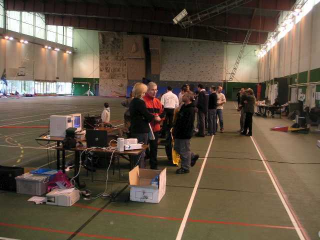
Amiens, un indoor du championnat. Un grand gymnase, tellement grand qu'on a pu y délimiter un terrain de compète et un autre, encore plus grand pour l'entraînement et l'amusement.

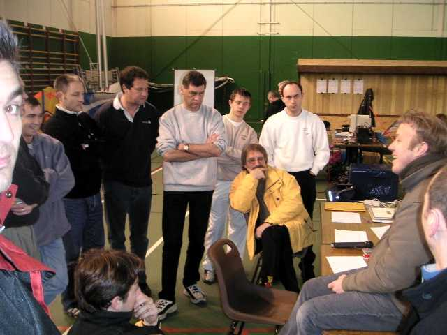
Avant tout, briefing. Dominique Miquet officie, suivi religieusement par tous les pilotes. C'est quand même très participatif et cool...

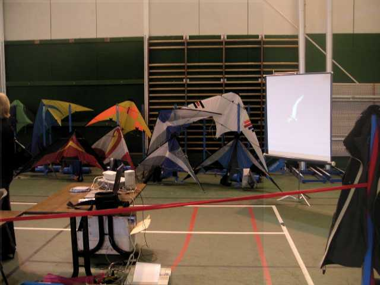
L'équipement est de première : sono musclée pour l'ambiance et les shows en musique, ordinateurs pour les classements, video-projecteur pour l'animation, avec des films d'Amiens outdoor, des diapos, etc...

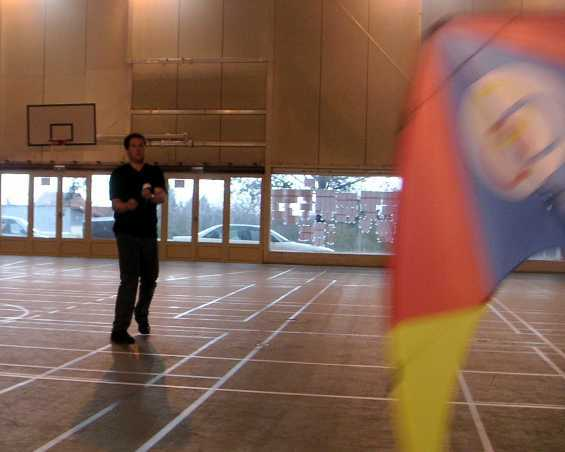
Et c'est parti. Les concurrents se succèdent et se... concurrencent. Je ne les mets pas tous, j'ai fait du monofil une bonne partie du temps, et puis l'éclairage était difficile, toujours en contre-jour, sorry ! Avec ce cerf-volant, j'ai fait moi-même un petit essai d'initiation à l'indoor : c'est pas si dur, faut garder la bête en mouvement, j'ai même passé un axel de chaque côté. Mais de là à me présenter au Championnat, y a du pain sur la planche ! Et puis, ce matin, j'ai mal aux mollets à force de marcher à reculons toute la journée (pilotable ou monofil, c'est toujours à reculons).

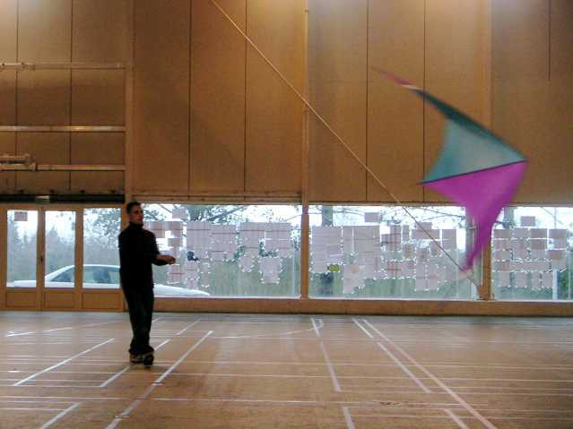
Là, c'est le gagnant de la catégorie Experts, mais j'anticipe. Pas besoin d'avoir un cerf-volant de toutes les couleurs avec du mylar armé etc. pour gagner ! Mais je peux pas dire que les couleurs de celui-là me mettent le coeur en fête...

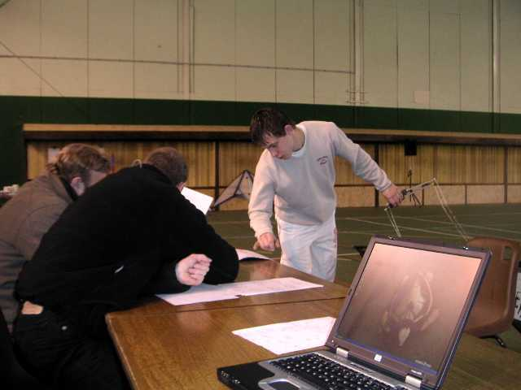
Il y a aussi du 4 lignes, avec surtout des révos, mais presque tous de fabrication maison.

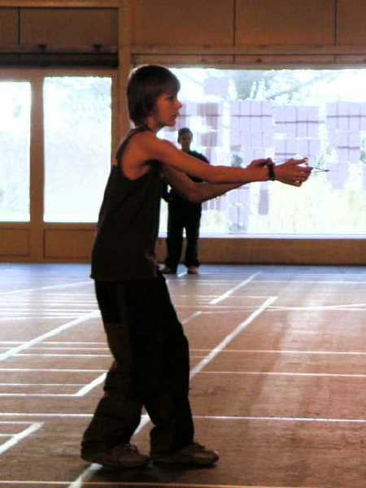
Toujours dans les 2 lignes, il y a 3 catégories : Novice, Intermédiaire, et Expert. Ici, Maxime (pas moi, Pillard) qui promet, bien qu'il se présente en compétition en mâchant son chewing-gum. Mais bah, c'est sans doute moi qui suit trop vieux jeu, de mon temps c'était malpoli...

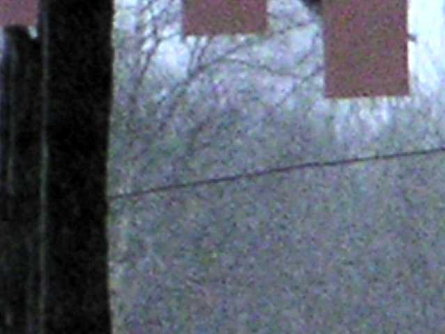
Heureusement qu'on est en indoor. Dehors, en arrivant un vent de tempête et dans la journée, torrents de pluie, grêle, et neige... Mais toujours un froid de canard, même dans le gymnase.

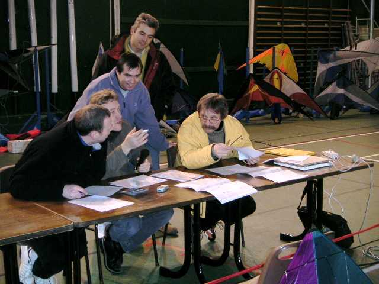
Pendant ce temps, le jury appelle, juge, réfléchit, se concerte.

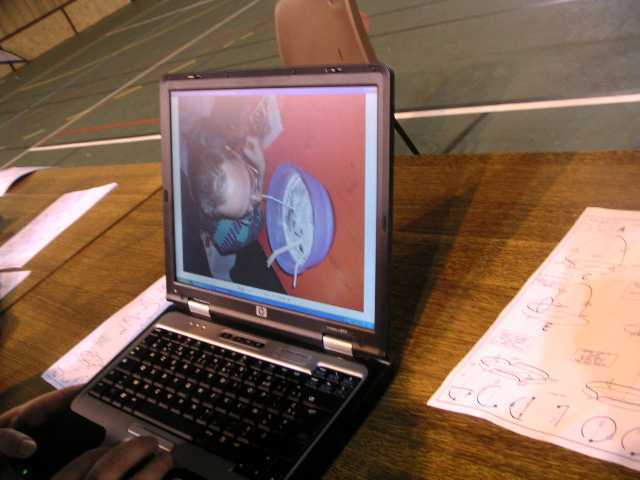
Mais la préparation des ordinateurs est parfois un peu délicate et entraîne sur des voies pas prévues...

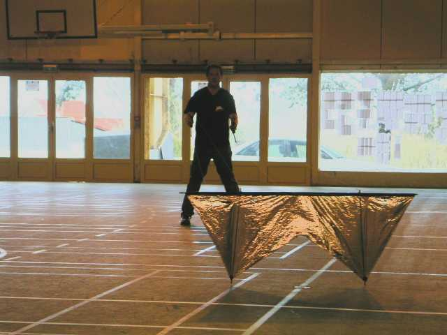
Le 4 lignes continue, le plus souvent avec des cerfs-volants personnels. Celui-ci, en mylar bordé au ruban adhésif a résisté déjà sans dommages à un paquet de compétitions, contrairement à ce qu'on aurait pu croire.

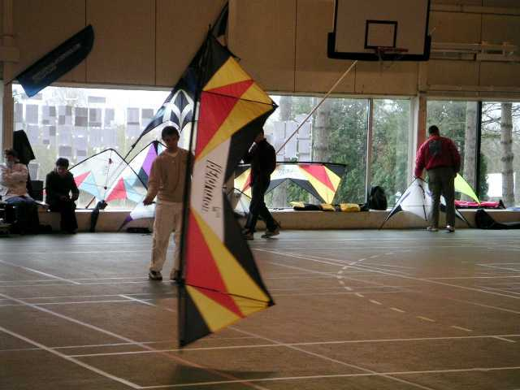
Celui de Jeremy Anquier est lui, un vrai Révo, c'est marqué dessus...

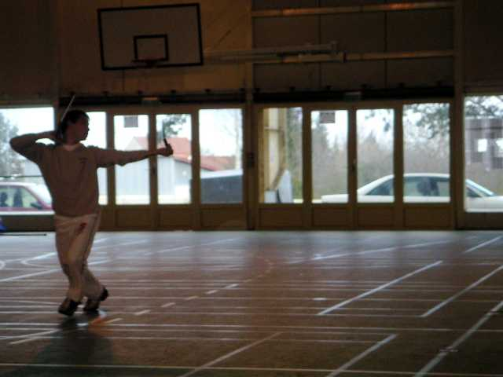
Et Jeremy le remue bien... et danse avec !

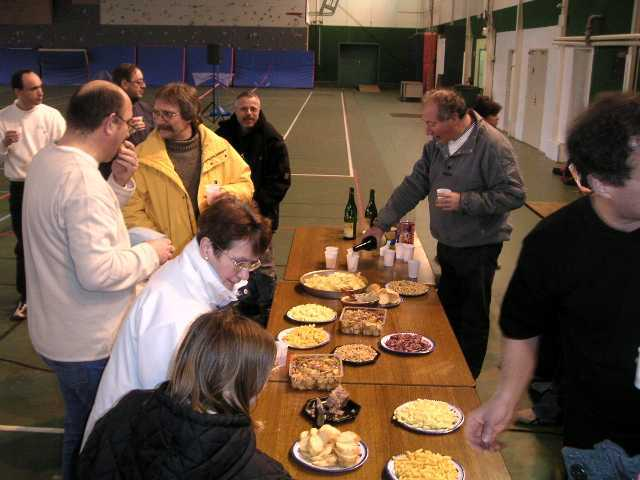
La matinée commençant à être plus qu'avancée, il est temps de faire honneur à l'apéritif généreusement offert.

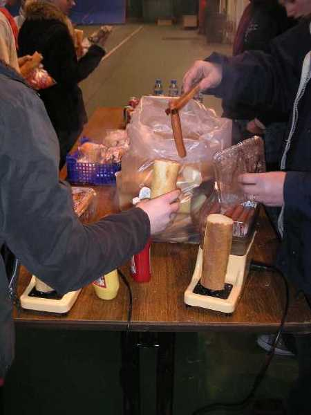
On poursuit l'apéritif avec les pâtés et hot-dogs, les appareils débitent à tout-va... Encore un petit coup de cidre (faut garder la tête froide pour l'après-midi), un dessert, des bonbons, des chocolats, mais arrêtez !

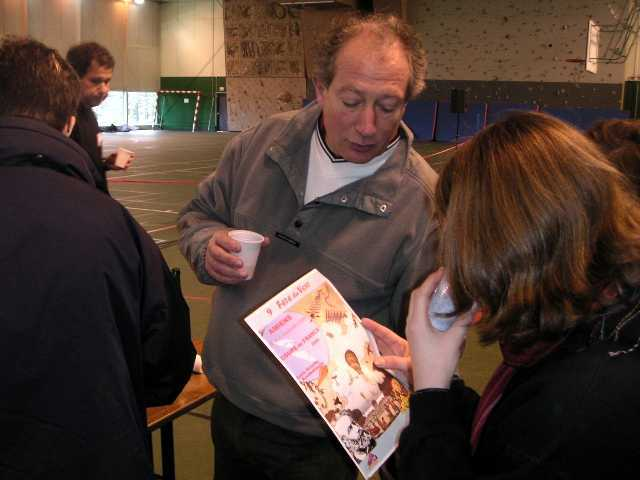
Hubert présente son ébauche bien avancée d'affiche pour la rencontre de plein air d'Amiens.

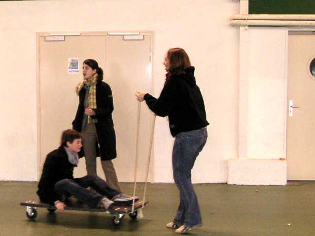
Pour digérer, les jeunes filles s'amusent avec le chariot, qui servira aussi à Michel Chantren (voir plus bas).

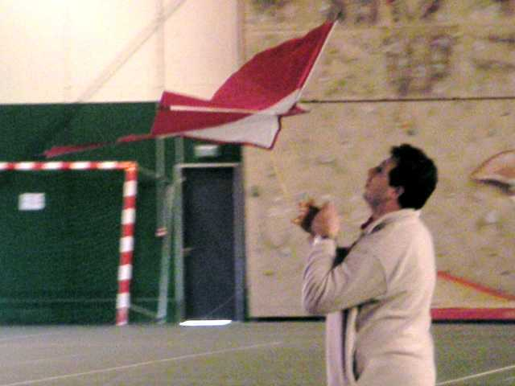
L'après-midi, c'est plus fun que la "Précision" le matin. Donc ballets en musique suivis ou entrecoupés d'exhibitions diverses. Le ballet de Bruno commence par le monofil et se poursuit par le pilotable, malheureusement abrégé par un wisker qui a percé la toile.

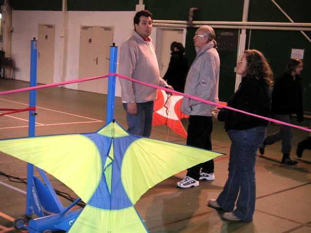
Michel Chantren va présenter un numéro de robot cervoliste remarquable (faut dire que c'est un champion du 4 lignes) !

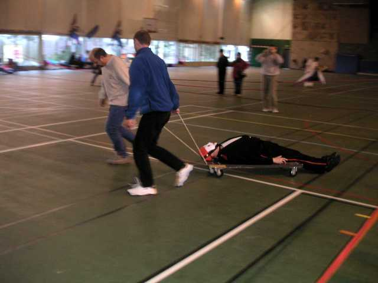
Première phase, roulement de tambour : un mystérieux mannequin est amené sur la piste.

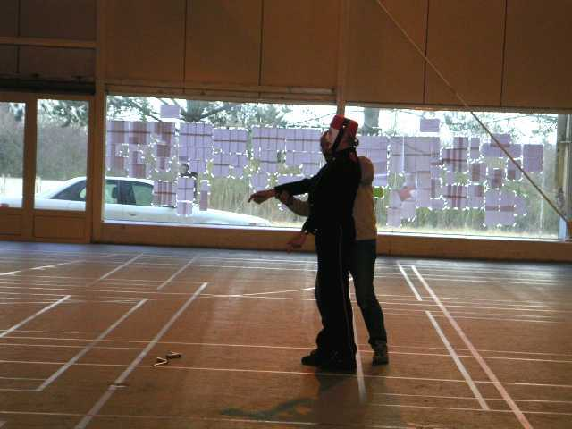
Le mannequin est mis debout et exhibe une face impressionnante.

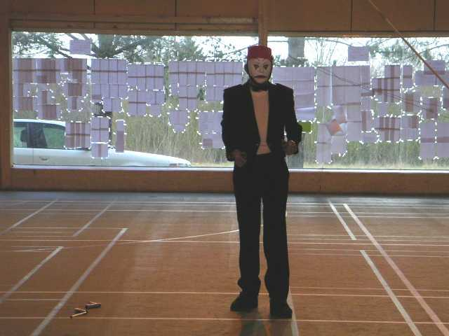
Vraiment très impressionnante !

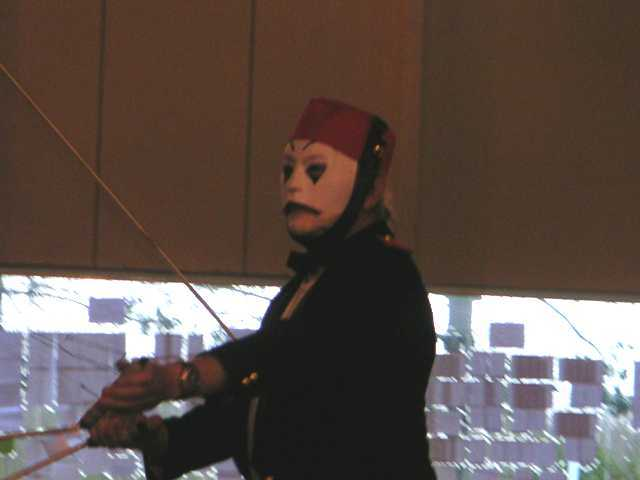
Il s'anime, par mouvements saccadés, on lui met en main les poignées du 4 lignes.
Et il va effectuer un numéro remarquable de précision et d'aisance.

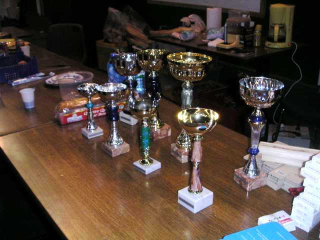
Mais tout a une fin. Les coupes et les lots (et ensuite un petit pot) attendent les pilotes, après tout le mal qu'ils s sont donné.

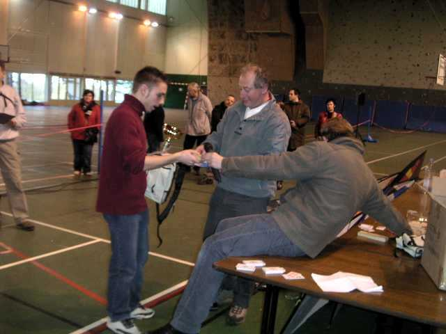
C'est Raphaël Jassin qui remportera la catégorie la plus haute, celle des Experts. Et, j'ai suivi, il le méritait largement.

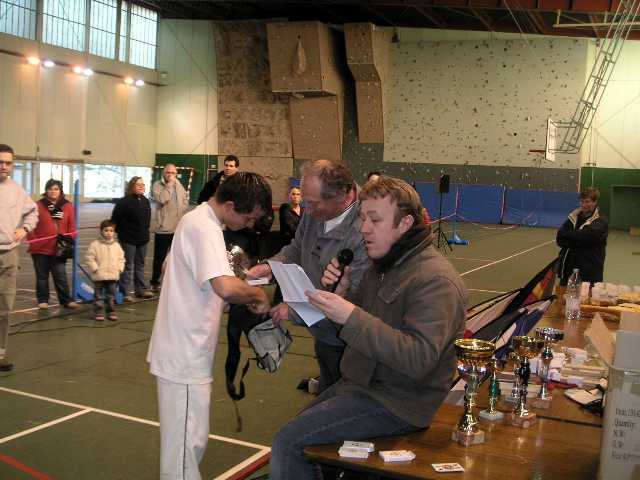
Jeremy, lui remporte la catégorie 4 lignes. Il est constamment en progrès.

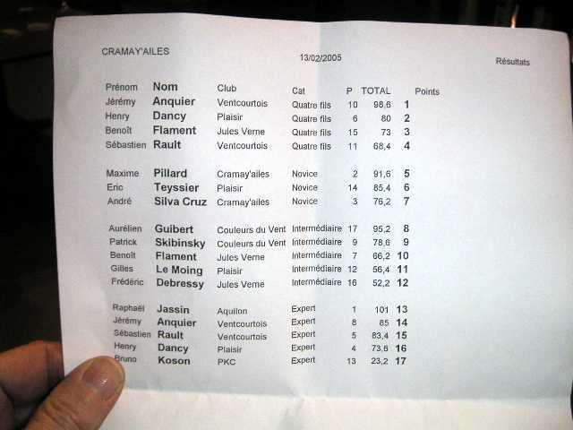
Pour les spécialistes, j'ai encore la liste des gagnants, comme à Plaisir.

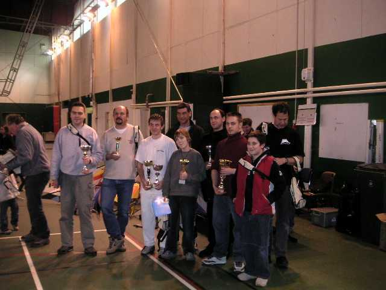
Les gagnants se rassemblent pour la consécration finale, après la remise des coupes et des lots. Une carte à jouer a été remise à chaque gagnant (et à moi pour mes prestations en monofil).

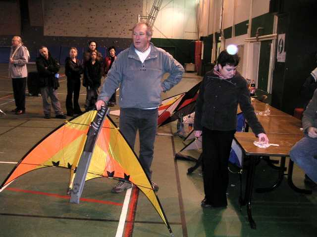
Mais c'est pas tout, des cerfs-volants sont tirés au sort par une main innocente entre les possesseurs de cartes.

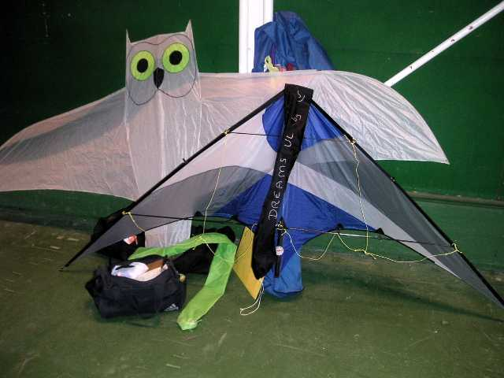
Et je gagne avec mon as de carreau un splendide Dreams de Cavaliers du Ciel monté en Skeeny UL. Mais saurai-je lui faire honneur ?
Conclusion, un indoor vraiment sympa, bien animé et bien doté. Pas beaucoup de public, surtout à cause de la situation excentrée du gymnase. Mais il paraît que l'an prochain, le gymnase d'Amiens même, le Colysée, sera rénové et utilisé. Ne manquez pas ça !